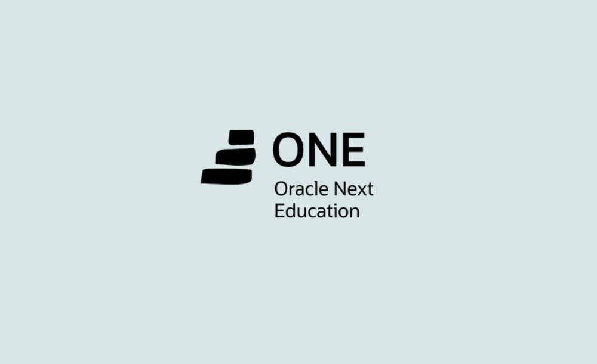

Formación
Desarrollo Web
Alura Latam 2022 - Actualmente
Ingeniería Electrónica
Universidad de Santander 2015 - ActualmenteGoogle Cloud Computing
Google Cloud Skills Boost 2022 - 2022
¡Hola! Soy Jhoan Plata, estudiante de Ingeniería Electrónica de la Universidad de Santander (UDES), actualmente me encuentro realizando mi último semestre universitario.
Durante los semestres anteriores he formado parte de varios proyectos, que me han permitido ir adquiriendo día a día más habilidades de comunicación y trabajo en equipo. En estos proyectos se han hecho uso de placa Arduino, placa nodeMCU esp8266, software Arduino para la programación, componentes electrónicos, diseño de maquetas o prototipos.